来源：https://bh5pm72xfy.feishu.cn/docx/YZUCdqT0roxrqNxKdQUcAgNfn9d
大家好，我是铲哥，介绍就免了，历史精华文章有写，节省大家的时间，直接步入正题：
混迹互联网十几年，做了很多短平快的项目，也赚了不少钱。但是最终还是要回归到长期价值上，你能赚多少钱，不是取决于你有多厉害，而是取决于你为用户提供多少价值。
我就在想，如何能用自己的能力，为更多的人提供价值，首先我对自己做了一个分析，看看个人有什么能力和资源可以利用起来。
在某个领域做出成绩的人，一定是关注自己的优点和长处，把自己的长处无限拉长，而不是一味的弥补自己的短板。
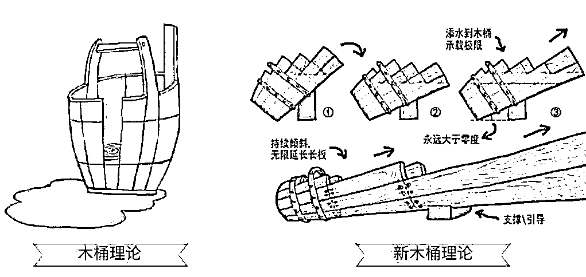
木桶理论：一个木桶能盛多少水，取决于最短的那块木板。但如果我们有意识地把木桶向长板方向倾斜，木桶的储水量就比正立时的木桶多得多。
于是我按照优势、能力、资源，三大分类来进行关于互联网相关的个人分析，用思维导图的形式来呈现，用的是软件是Xmind。思维导图可以快速捋清楚你的想法并展现出来，大家不妨也给自己做个分析，清楚自己的长处。
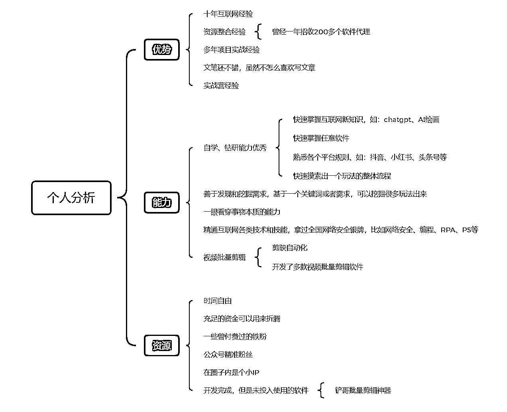
核心竞争力是很重要的一项能力，为什么很多人懂得很多道理，却依旧碌碌无为，很大一部分原因就是缺少核心竞争力。就算你在各个方面都达到了6分，整体都比我强，但是只要我在视频批量剪辑领域达到8分或者9分，我就可以轻松击败你。
那些取得巨大成就的人，无一不是在某个领域做到了八九分的人。发展自己的“长版”，远比耗费精力弥补自己的短板，效率要高得多的多。
根据分析，比较适合我在互联网上做，并且有竞争力的事情有以下几种（表格中标记为红色的部分是需要重点考虑的）
| 交付产品 | 产品定价区间 | 利润高 | 试错成本低 | 运营成本低 | 投产比高 | 同时交付人数 | 售后成本低 | 交付成本低 | IP依赖度低 | 流量获取容易 | 是否可以杠杆 | 是否有复利 | 总分 |
|---|---|---|---|---|---|---|---|---|---|---|---|---|---|
| 知识星球 | 299-699 | 2 | 3 | 3 | 3 | 5 | 5 | 4 | 3 | 3 | √ | √ | 31 |
| 批量剪辑软件+使用教程 | 299-599 | 2 | 1 | 4 | 3 | 3 | 4 | 4 | 3 | 4 | √ | √ | 28 |
| 项目录播课+实战营+软件 | 1980-3999 | 5 | 1 | 1 | 5 | 2 | 2 | 1 | 1 | 2 | × | × | 20 |
| 实用类技能课 | 199-699 | 2 | 2 | 4 | 3 | 2 | 4 | 4 | 2 | 3 | √ | × | 26 |
这些只是交付产品，本质上还是做个人IP，做一件事要以结果为导向，这样可以逆向拆解出最小的行动步骤。
1.视频批量剪辑软件（这个已经做过，招收了200多个代理，由于代理太多，风险不好把控，很早之前就已经停了）
2.项目实战营+配套软件（也做过，带了一些学员做出不错的成绩，虽然收益很可观，但是交付比较重，也不可以加杠杆放大，完全就是依靠个人IP和价值吸引，而且小白真的很难带，耗费的精力真不如自己来做，所以带了几次就不带了。）
3.不做项目培训，做实用技能课，比如chatgpt课程、AI绘画课程，这两个领域确实不错，但是存在一个很大的问题就是，如果去公域引流，很多人连访问都访问不了，政策也不允许教学魔法，所以方向是个好方向，但是不利于放大操作。
最后只剩下一个选项，那就是做知识星球，综合评分也是最高的，结合个人分析的能力（善于发现和挖掘需求，基于一个关键词或者需求，可以挖掘很多玩法出来）。
发现了一个痛点，那就是有很多人，缺少的并不是知识和能力，而是具体的方向，再优秀的航海家，没有指南针也会迷失在茫茫的大海上。
那我何不搞一个星球，按照平台分类，专门提供各个平台的玩法拆解？即可以用输出倒逼输入，又可以为用户提供价值，最终双赢，所以【项目案例库】星球就诞生了。
如果说生财有术是船，那我要做的就是指南针，虽然很小，但确很有用。
以上就是我做这件事情的开始，如果没有前面的内容，你可能以为我是突发奇想，实际上是根据分析，慎重考虑后的结果。
说干就干，奔着先找买家，再做产品的原则，第一件事情自然就是跑通最小MVP（也就是盈利模型），验证需求是否真的存在，于是我把想法发到了交流群。
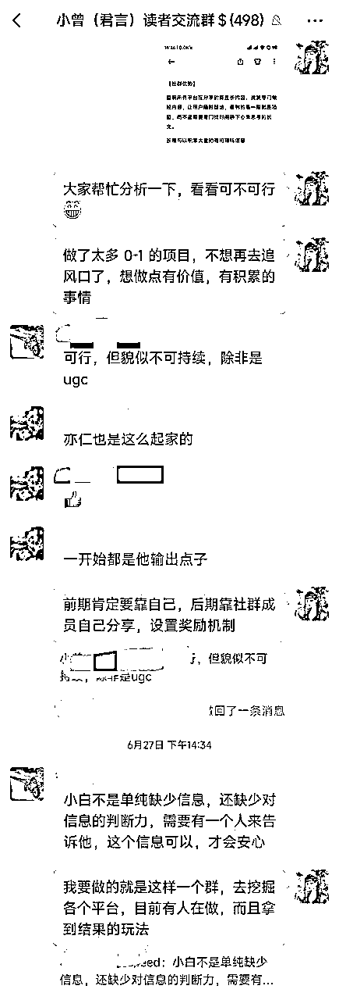
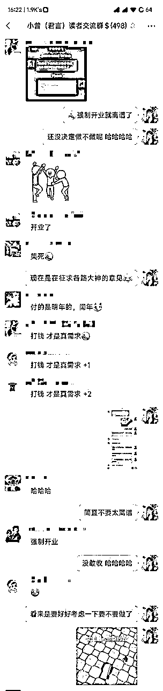
聊了很多内容，没办法全部截图过来，比较让我出乎意料的是，我连星球的名字都还没有想好，居然一堆人跑过来直接转账预定（当然，我一个都没收，验证需求存在就足够了）。
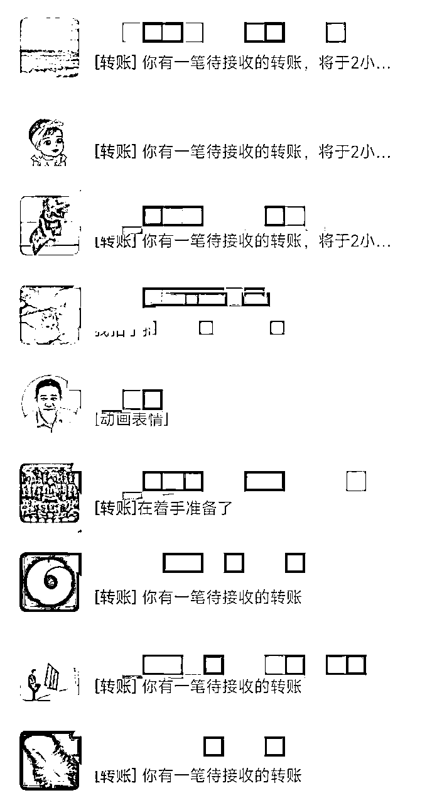
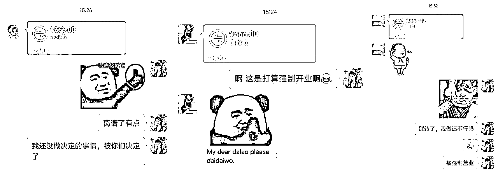
在我自己还在确定要不要做的时候（要在正确的事情上下重注，正确的决策比努力更重要，所以考虑的较详细），直接就被强制营业了，于是我开始认真着手做这件事情。
首先是熟悉知识星球的规则和每一个功能，把星球先建立起来，后面再慢慢完善。本来就是技术出身，经过半天时间的摸索，基本熟悉了星球所有功能和用法。
真的是把星球所有功能和按钮都试了一遍，而且用了两个号，一个是星主，一个是成员，分别查看不同账号下的区别，真正的站在用户的角度去思考。
我列出了当前需要完成的任务：
1.想一个星球名称，必须和“赚钱”有关，但是不能直接带“赚钱”两个字，而且要和星球的主题相符合，通过标题就能看出来星球是做什么的。
圈内大家都叫我“铲哥”，我觉得掘金挺适合的，想了一个名字叫：掘金有道，结果已经被人捷足先登了。那就换个通俗易懂的名字吧：项目拆解案例库，感觉又太长了，所以最后干脆就叫项目案例库，通俗易懂。
你可能会问：起个名称而已，何必这么费劲？其实名称就和汽车的车标一样，非常重要，有些车标注定就不可能做成豪车，一个丑车标就直接毁掉整台车的形象。名称也是一样，如果把“生财有术”改成“1000个赚钱小案例”，你觉得怎么样？细节往往决定成败！
2.设计一个星球logo，想好名称以后，记得先去全网搜一下，如果像公众号、知乎之类的已经被注册，那就果断换个名字，我在这里就吃了个小亏，logo都设计好了，结果发现被注册了，所以干脆直接改成“项目案例库”用吧。
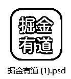
这里有个小细节：如果你打算做个人IP等，记得把全网比较热门的平台都注册一下，省的后期要做某个平台，结果名称被人注册了，所以我又花了一些时间，把公众号、抖音、小红书、视频号、知乎、头条号、西瓜视频、百家号、微博、哔哩哔哩、喜马拉雅等，全都提前注册了。
3.写一条言简意赅的星球简介，让用户知道你的星球是提供什么服务的，于是我就去阅读了所有副业类的星球简介（优秀的同行是最好的老师），然后结合自己星球的特点，把简介1.0版本写了出来。
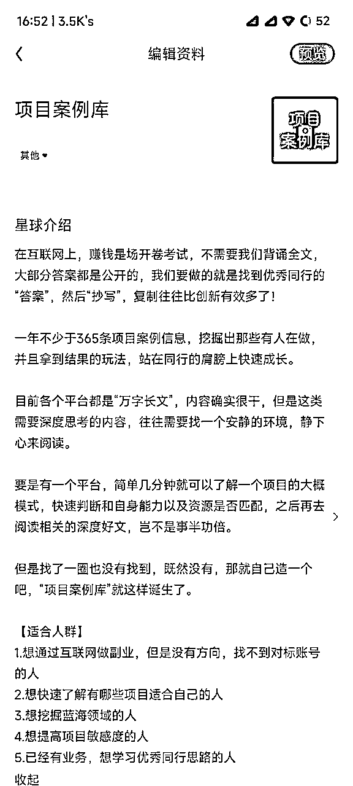
先不要想要一步到位，把想法写出来然后再去优化。感觉还可以，但是文字太长了，不够精华，于是我又做了调整，把一些能图形化的内容做到海报里面，简介就尽可能短一些。
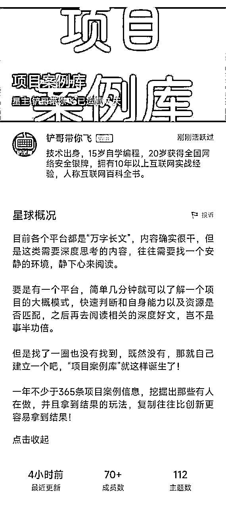
4.设计一个星球海报（发现好多星球连海报都没有，一定意义上，好的海报是可以影响转化率的），自己虽然会PS，但是专业的事情还是要交给专业的平台，我用的是图怪兽，找了一个不错的模板，前后优化了4次布局才满意。
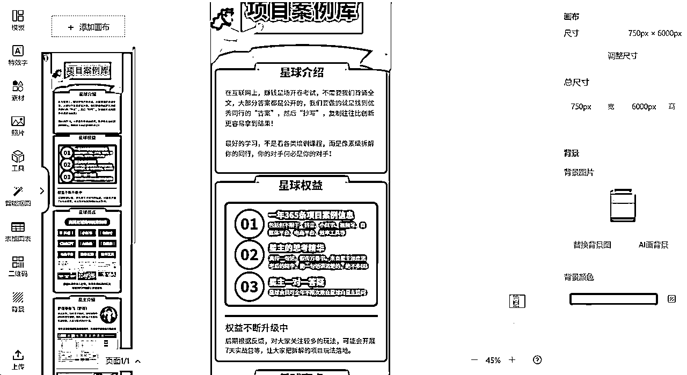
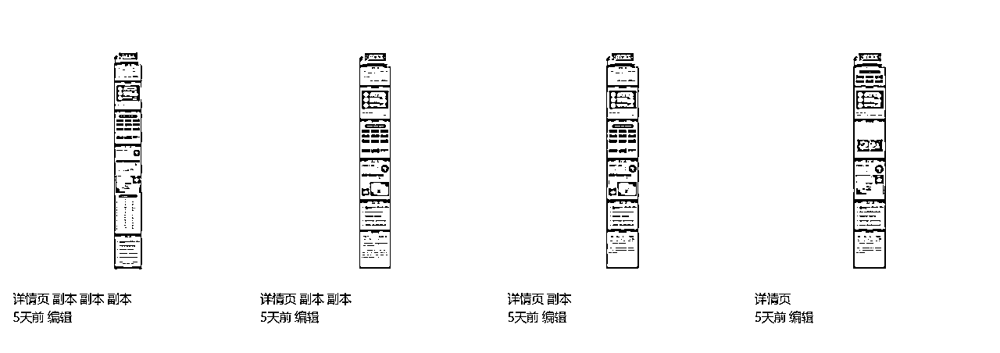
最后的成品效果如下，从有想法到完成星球建设，一共耗时两天时间：
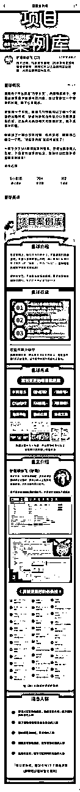
很多事情，只有你真正行动起来了，才知道有哪些需要改进，需要学习和掌握哪些知识和技能。
5.在星球铺设一些案例和优质内容，总不能用户加入星球后什么都没有吧，还好平常有记笔记的习惯，一些有价值的思考都会记录下来，平常也关注了很多目前有人在操作的玩法，所以内容方面不缺，一口气分享了很多。
到此，前期工作算是完成，接下来就是完成冷启动，总不能当个光杆司令吧。
首先想到的就是微信群和朋友圈、其次就是公众号，于是我找到了@君言戏语，星球中叫@小曾，能处理千万级的关键词，并挖掘出各种需求和项目，是个很低调的SEO大佬，名字就看的出来，感兴趣可以去看看他的生财精华帖，相信你会有不错的收获。
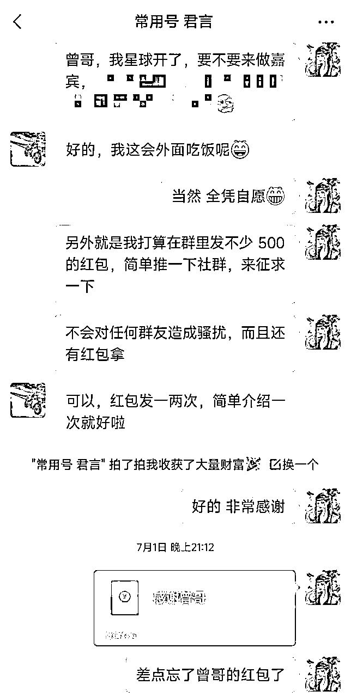
在别人的“地盘”就要按照别人的规矩来，凡事一定要站在别人的角度来思考，直接表明来意和“好处”。
很多人和人聊天，上来就是：你好，在吗？难不成别人，还要特意给你回个：在
越是厉害的人，时间越宝贵，一定要直接表明来意，人家才知道你要干什么，要不要抽空回你，如果能再发一个红包，我相信没有人会对你产生反感。
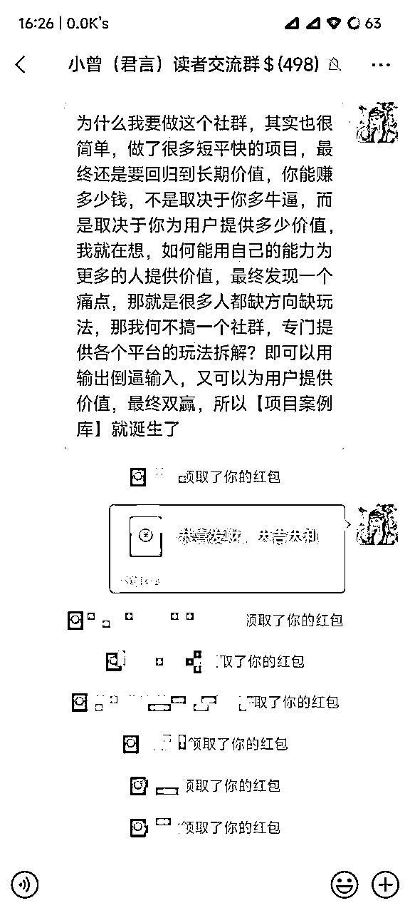
效果自然不用说，这个方法也可以复制到更多的地方。之前积累了一些私域粉丝，所以同时把战况发到了朋友圈，又收获一些支持。
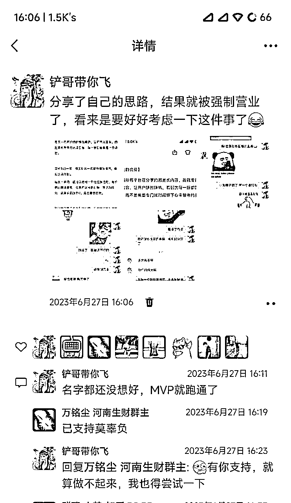
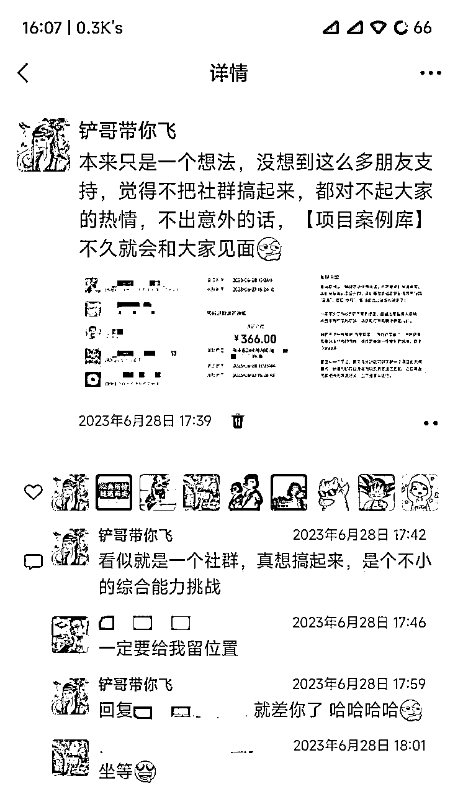
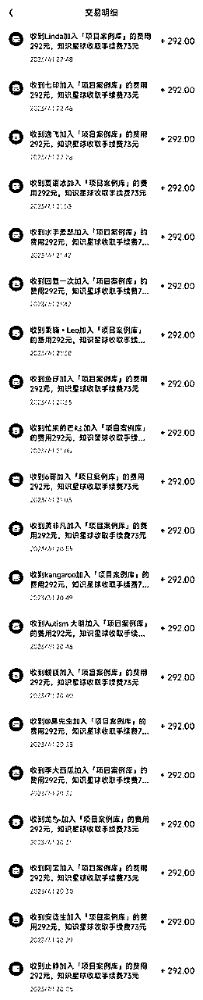
截至目前已经有快100人加入星球，至于公众号，是个输出价值的平台，不像朋友圈可以直接去发，所以还没来得及去写内容，后面会分享更多实战操作的细节。
最后，感谢生财有术提供的平台，大家一起生财有术！